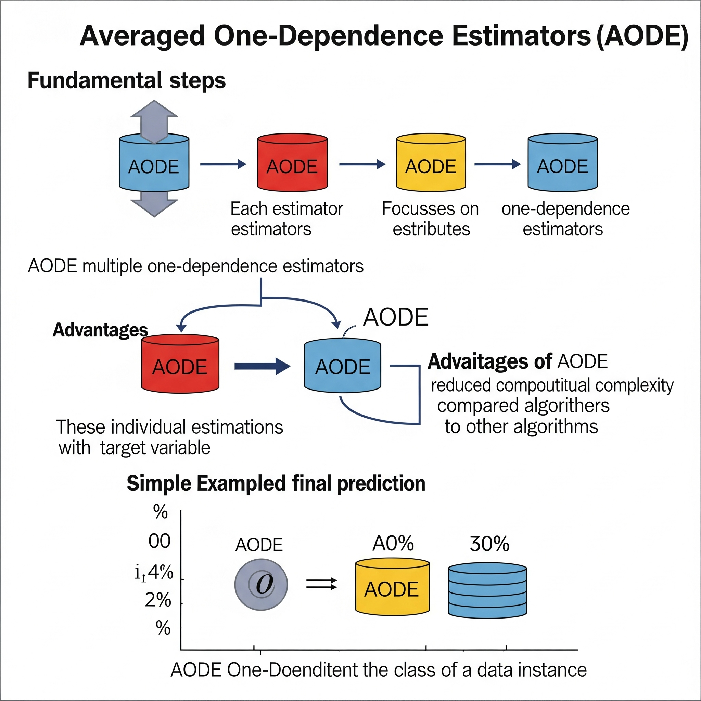
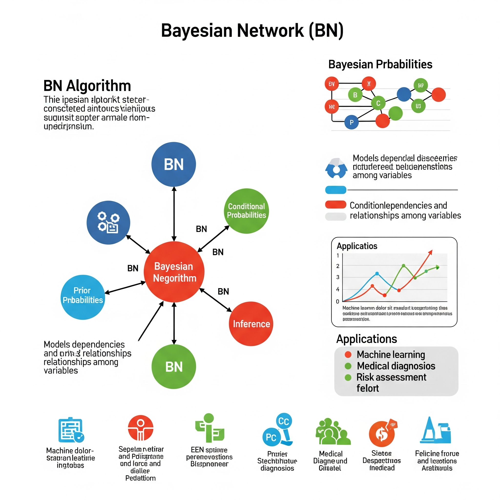
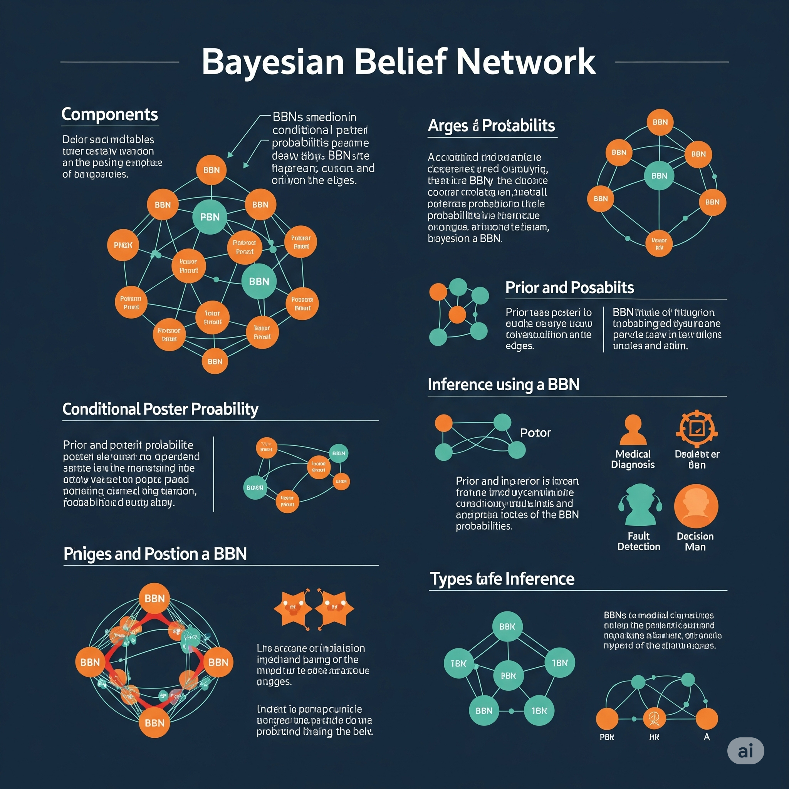
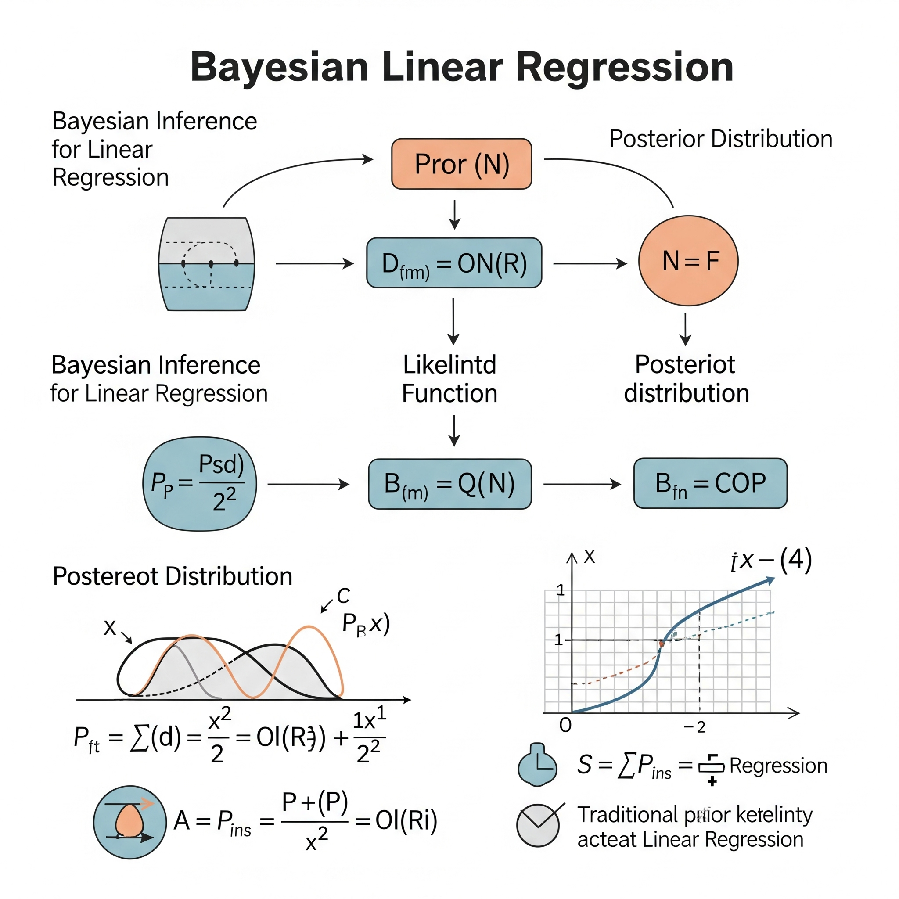
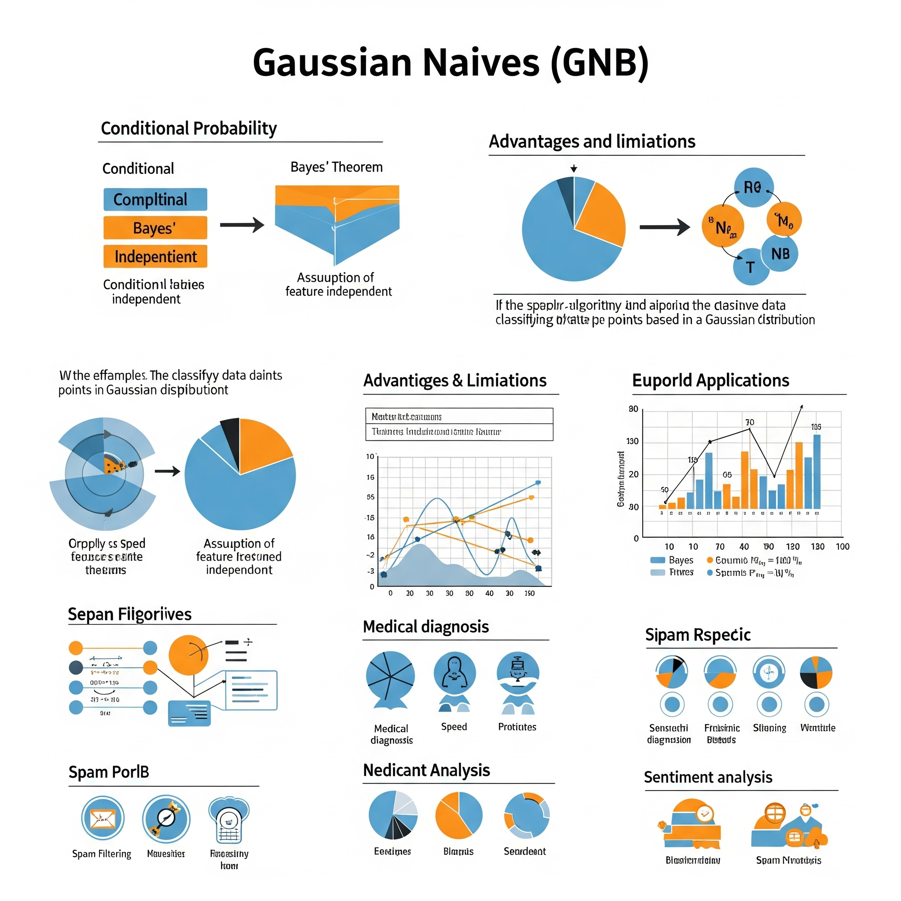
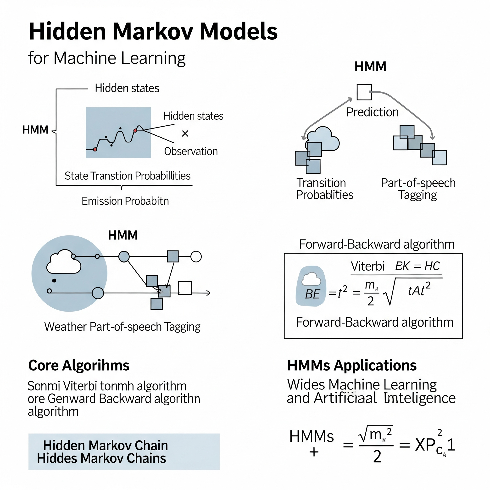
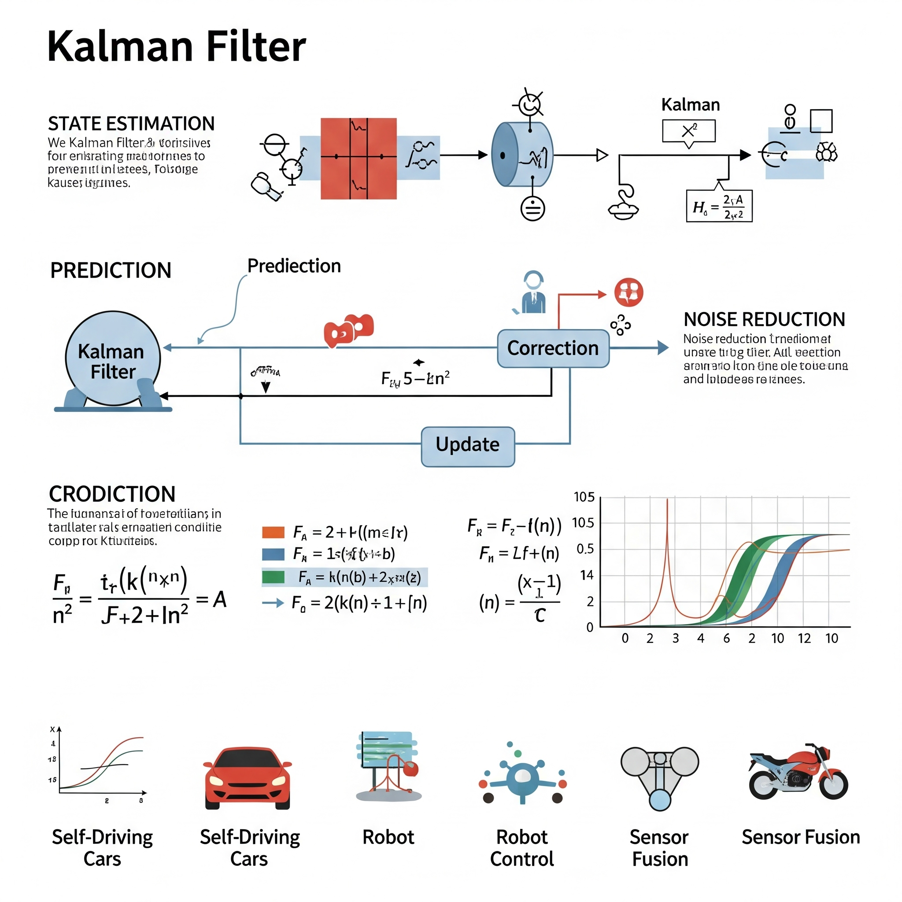
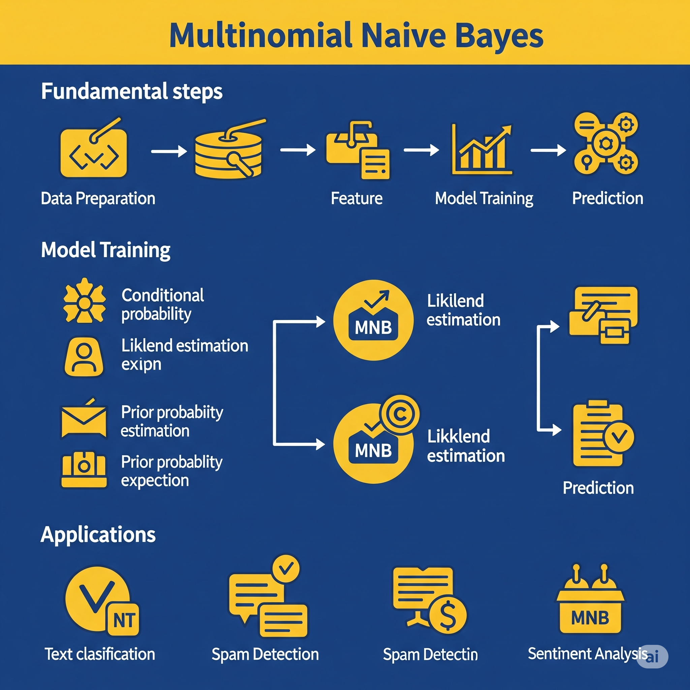
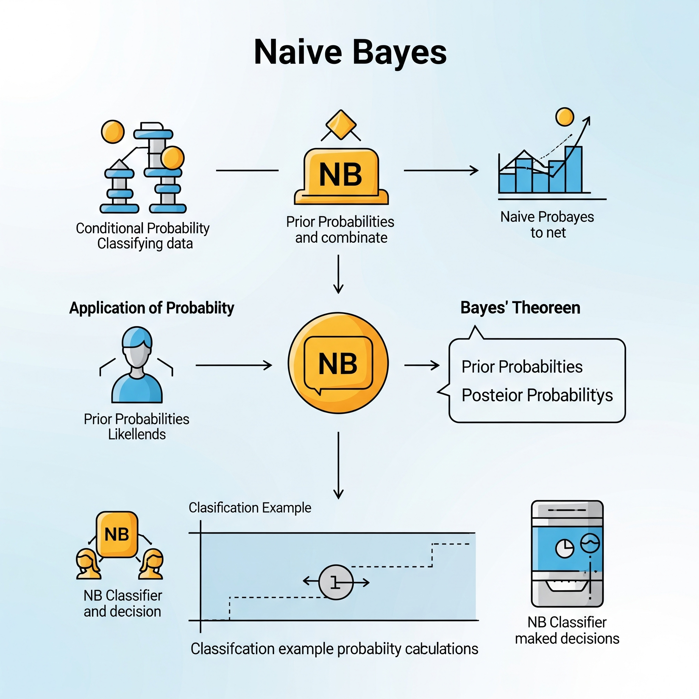

🧬 6. Modelos Bayesianos
Ejemplos: Naive Bayes, Redes Bayesianas.
Uso: Ideales para clasificación rápida, especialmente en escenarios con supuestos simples sobre los datos. Son muy populares en tareas de procesamiento de texto y detección de spam.
Ventajas: Son modelos muy rápidos de entrenar y predecir, y están sólidamente fundamentados en la teoría de probabilidad.
Limitaciones: La principal es que asumen independencia entre las variables predictoras, lo cual no siempre se cumple en la realidad y puede afectar su precisión en ciertos problemas.
Averaged One - Dependence Estimators (AODE)

Averaged One-Dependence Estimators (AODE) es un algoritmo de clasificación supervisada que pertenece a la familia de los clasificadores basados en modelos bayesianos. Es una mejora sobre el clásico Naive Bayes (NB), diseñado para superar la limitación clave de NB: la asunción de independencia condicional estricta entre las variables predictoras (atributos) dado el valor de la clase. Esta suposición, aunque simplifica mucho el cálculo y permite a Naive Bayes ser muy eficiente, rara vez se cumple en la realidad y puede llevar a una pérdida de precisión.
AODE relaja parcialmente la suposición de independencia de Naive Bayes al considerar que cada atributo es dependiente, como máximo, de un solo otro atributo (además de la variable de clase). En lugar de construir un único modelo de árbol de dependencia (como en el Árbol de Dependencia de Atributos - ADTree), AODE construye una colección de clasificadores “One-Dependence” (ODE) y luego promedia sus predicciones.
El funcionamiento de AODE se puede resumir así:
-
Generación de Clasificadores ODE: Para cada atributo predictivo \(A_i\) en el conjunto de datos (que cumpla ciertos criterios, como tener suficientes instancias), AODE construye un clasificador ODE. Este clasificador asume que todos los demás atributos son condicionalmente independientes de \(A_i\) dado la clase. En otras palabras, se estima la probabilidad condicional de cada atributo \(A_j\) dado la clase \(C\) y el atributo \(A_i\): \(P(A_j | C, A_i)\).
-
Ponderación y Promedio: Cuando se hace una predicción para una nueva instancia, AODE calcula la probabilidad de cada clase para cada uno de los clasificadores ODE generados. Luego, estas probabilidades se combinan (típicamente promediando) para obtener una predicción final.
Al promediar las predicciones de múltiples modelos ODE, AODE logra mitigar el sesgo introducido por la suposición de independencia estricta de Naive Bayes, a menudo obteniendo un mejor rendimiento sin incurrir en una complejidad computacional excesiva.
Aprendizaje Global vs. Local:
Averaged One-Dependence Estimators (AODE) es un modelo que se clasifica como de aprendizaje global, aunque con una estructura que busca capturar dependencias que tienen una naturaleza más “local” en el contexto de las relaciones entre atributos.
Aspecto Global: AODE construye un conjunto de modelos (los ODEs) que son entrenados sobre la totalidad del conjunto de datos para estimar las probabilidades condicionales. La combinación de estas probabilidades (el promedio) para llegar a una predicción final es una regla que se aplica de manera consistente a cualquier nueva observación. Los parámetros de cada clasificador ODE (las probabilidades condicionales) se estiman de manera global a partir de las frecuencias observadas en todo el conjunto de entrenamiento.
Matiz (Captura de Dependencias Locales): Aunque el enfoque general es global, la razón por la que AODE es más potente que Naive Bayes radica en su capacidad para modelar dependencias entre atributos. Cada clasificador ODE considera que un atributo específico tiene una dependencia directa de otro atributo, lo que es una forma de capturar una relación “local” entre un par de atributos dado el contexto de la clase. Al promediar sobre estos múltiples modelos que capturan diferentes dependencias de “un solo par”, AODE puede adaptarse mejor a las complejidades de los datos donde las relaciones no son puramente independientes y no se distribuyen linealmente, sin la necesidad de dividir el espacio de características en regiones discretas como los árboles de decisión. Sin embargo, la solución final de promediado es un clasificador global que se aplica a toda la instancia de entrada.
| Guía rápida para elegir AODE |
| Averaged One - Dependence Estimators (AODE) |
| Criterio |
Aplica |
Detalles |
| Tipo de modelo |
✅ Supervisado (clasificación) |
Clasificador bayesiano que promedia modelos con una única dependencia entre pares de atributos para mejorar sobre Naive Bayes. |
| Variable respuesta |
✅ Categórica |
Diseñado para problemas de clasificación con clases categóricas. |
| Variables predictoras |
✅ Categóricas principalmente |
Se usa típicamente con variables categóricas, aunque puede adaptarse a discretizadas. |
| Relación entre variables |
⚠️ Modela dependencias limitadas entre atributos (mejora sobre NB) |
Relaja el supuesto de independencia total de Naive Bayes permitiendo una única dependencia por atributo. |
| Normalidad de residuos |
❌ No aplica (no es regresión) |
No es un modelo de regresión, por lo que no aplica el supuesto de normalidad de residuos. |
| Independencia de errores |
✅ Requiere independencia entre instancias |
Las observaciones deben ser independientes para que las estimaciones sean válidas. |
| Homoscedasticidad |
❌ No aplica |
No supone homoscedasticidad debido a su naturaleza probabilística. |
| Sensible a outliers |
⚠️ Puede verse afectado por outliers si se usan variables numéricas sin tratamiento |
Los valores atípicos pueden afectar la calidad de la estimación de probabilidades. |
| Multicolinealidad entre predictores |
✅ Menos afectado que Naive Bayes por dependencias entre atributos |
Tolera mejor la multicolinealidad al permitir dependencias limitadas entre atributos. |
| Interpretabilidad |
⚠️ Moderadamente interpretable (combinación de varios modelos NB con 1 dependencia) |
La interpretación es más compleja que NB, pero aún comprensible por su estructura promedio. |
| Velocidad y eficiencia |
⚠️ Más costoso que NB, pero aún eficiente |
Requiere más tiempo de cómputo que NB, pero sigue siendo razonablemente eficiente. |
| Validación cruzada |
✅ Puede validarse mediante k-fold cross-validation |
La validación cruzada es útil para evaluar el desempeño y generalización del modelo. |
| No funciona bien si... |
❌ Desempeña mal con muchos atributos irrelevantes o con pocos datos por combinación de atributos |
El rendimiento cae si hay muchos atributos irrelevantes o datos escasos por combinación de atributos. |
Bayesian Network (BN)

Una Red Bayesiana (BN), también conocida como Red Bayesiana Causal o Modelo Gráfico Dirigido Acíclico (DAG), es un modelo probabilístico que representa un conjunto de variables y sus relaciones de dependencia condicional utilizando un grafo dirigido acíclico. En este grafo:
-
Nodos: Representan las variables aleatorias (pueden ser discretas o continuas).
-
Arcos (flechas): Representan las dependencias condicionales entre las variables. Una flecha de A a B significa que B depende directamente de A (A es “padre” de B). La ausencia de un arco entre dos nodos indica una independencia condicional.
La estructura del grafo de una Red Bayesiana permite visualizar y comprender las relaciones de causa y efecto (o asociación) entre las variables. Junto con la estructura del grafo, una BN también especifica las distribuciones de probabilidad condicional (CPDs) para cada nodo, dadas las combinaciones de estados de sus nodos padre. Por ejemplo, si un nodo tiene padres, se define la probabilidad de sus valores para cada combinación de valores de sus padres.
Las Redes Bayesianas son potentes para:
* Modelado de Conocimiento: Codificar el conocimiento experto o aprendido de los datos sobre cómo interactúan las variables.
* Inferencia Probabilística: Calcular la probabilidad de que una variable tome un valor específico, dadas las observaciones de otras variables (evidencia). Esto puede incluir diagnóstico (inferir causas a partir de efectos) o predicción (inferir efectos a partir de causas).
* Aprendizaje de Estructura y Parámetros: Aprender la estructura del grafo (las dependencias) y las CPDs a partir de datos.
Aprendizaje Global vs. Local:
Una Red Bayesiana (BN) es fundamentalmente un modelo de aprendizaje global en su estructura general, pero con una fuerte base en el aprendizaje local de las dependencias.
Aspecto Global: La estructura del grafo y el conjunto de tablas de probabilidad condicional (CPDs) forman un modelo probabilístico coherente y global de la distribución de probabilidad conjunta de todas las variables. Este modelo global puede ser utilizado para realizar inferencias sobre cualquier combinación de variables en cualquier parte del espacio de datos. La red define cómo la información fluye y cómo las probabilidades se propagan a través de todas las variables, dando una visión holística de las interacciones del sistema.
Aspecto Local (Dependencias y Parametrización): Donde la BN tiene un fuerte componente local es en la definición de las dependencias y la parametrización de las CPDs. Cada nodo solo necesita conocer las probabilidades condicionales dadas sus padres directos. Esto es un principio de independencia condicional local: una variable es independiente de sus no-descendientes dado sus padres. Esto descompone un problema complejo de modelado de la distribución conjunta en problemas más pequeños y manejables de modelar las dependencias locales. Por ejemplo, para estimar \(P(X_i | Padres(X_i))\), solo se necesita información local relacionada con \(X_i\) y sus padres, no con todas las demás variables en la red. Esta capacidad de modelar dependencias de forma localizada, y luego ensamblarlas en un modelo global, permite a las BNs manejar relaciones no lineales y complejas de una manera estructurada y probabilística. Si los datos no se distribuyen linealmente, la estructura de la BN puede adaptarse para reflejar las relaciones no lineales entre las variables a través de sus arcos y CPDs.
| Guía rápida para elegir Redes Bayesianas (BN) |
| Modelado Probabilístico con Dependencias Condicionales |
| Criterio |
Aplica |
Detalles |
| Tipo de modelo |
✅ Supervisado / No Supervisado / Semi-supervisado (Estimación de relaciones probabilísticas) |
Una Red Bayesiana es un modelo gráfico probabilístico que representa un conjunto de variables y sus dependencias condicionales mediante un Grafo Acíclico Dirigido (DAG). Los nodos representan variables (observables o latentes) y los aristas representan dependencias probabilísticas directas. |
| Variable respuesta |
✅ Numérica o Categórica (cualquier variable en el grafo puede ser objetivo) |
En una BN, cualquier variable en el grafo puede ser considerada la 'variable respuesta' para una consulta específica. Se pueden realizar inferencias para cualquier variable dada la evidencia de otras. |
| Variables predictoras |
✅ Mixtas (numéricas y categóricas) |
Las variables predictoras son otros nodos en el grafo que se utilizan para inferir la distribución de la variable objetivo. Las BNs manejan bien datos mixtos (numéricos y categóricos), pero las variables numéricas pueden requerir discretización o modelado con distribuciones paramétricas (ej., Gaussianas). |
| Relación entre variables |
✅ Compleja (dependencias condicionales explícitas) |
Capta relaciones muy complejas y no lineales a través de la estructura explícita del grafo y las Tablas de Probabilidad Condicional (CPTs) o funciones de densidad. Permite modelar cómo la probabilidad de una variable depende de sus 'padres' en el grafo. |
| Normalidad de residuos |
❌ No es requisito directo (pero las distribuciones condicionales pueden ser Gaussianas) |
No asume normalidad de los residuos de manera general. Sin embargo, si se utilizan redes Bayesianas Gaussianas o modelos paramétricos para las relaciones condicionales, entonces las distribuciones de los datos dentro de esas condiciones podrían ser Gaussianas. |
| Independencia de errores |
✅ Implícitamente modelada (a través de la estructura del grafo) |
La independencia de errores no es una suposición externa, sino que se **modela explícitamente** dentro de la estructura del grafo. Las dependencias e independencias condicionales son el corazón de la BN. |
| Homoscedasticidad |
❌ No es requisito |
No asume homoscedasticidad. Las distribuciones condicionales de las variables pueden tener varianzas diferentes dependiendo de los valores de sus padres. |
| Sensible a outliers |
⚠️ Sí (la estimación de parámetros puede verse afectada) |
Sí, las Redes Bayesianas pueden ser sensibles a los outliers, especialmente durante la fase de **estimación de parámetros** (las probabilidades condicionales). Un outlier puede distorsionar las estimaciones de probabilidad si no se maneja adecuadamente o si el dataset es pequeño. Sin embargo, en la inferencia, pueden ser robustas si el outlier es tratado como un valor de baja probabilidad. |
| Multicolinealidad entre predictores |
✅ Muy bien (su estructura explícita permite manejarla) |
Maneja la multicolinealidad **muy bien**. De hecho, las BNs la representan explícitamente a través de la estructura del grafo. Si dos variables están correlacionadas, habrá una arista o un camino que represente esa dependencia, a diferencia de los modelos lineales que sufren por ella. |
| Interpretabilidad |
✅ Muy alta (estructura de grafo y probabilidades son claras) |
La interpretabilidad es **muy alta**. La estructura del grafo (qué variables influyen en cuáles) es visual y comprensible. Las probabilidades condicionales asociadas a cada nodo explican la fuerza y la naturaleza de las relaciones. Esto es invaluable para la validación por expertos de dominio y la extracción de conocimiento. |
| Velocidad y eficiencia |
⚠️ Moderada a Baja (aprendizaje de la estructura, inferencia) |
La velocidad y eficiencia son **moderadas a bajas**. El **aprendizaje de la estructura** del grafo es un problema NP-difícil, lo que lo hace muy costoso computacionalmente para un gran número de variables. La **inferencia probabilística** (calcular probabilidades en el grafo) también puede ser costosa (NP-dura en general), aunque existen algoritmos eficientes para ciertos tipos de redes. |
| Validación cruzada |
✅ Compatible y útil |
Es compatible y **muy útil**. La validación cruzada se utiliza para evaluar el rendimiento predictivo de la BN (ej., precisión de clasificación, log-verosimilitud) y para comparar diferentes estructuras de grafo o la elección de hiperparámetros en el aprendizaje de la estructura. |
| No funciona bien si... |
❌ Relaciones con ciclos, tamaño de dataset muy pequeño para muchas variables |
No funciona bien si: 1) el **número de variables es muy grande** (el aprendizaje de la estructura se vuelve inviable), 2) las **relaciones en los datos son cíclicas** (las BNs son DAGs, no pueden modelar ciclos directos, aunque pueden modelar dependencias a largo plazo), 3) el **dataset es muy pequeño** para estimar de forma fiable las tablas de probabilidad condicional de nodos con muchos padres, o 4) hay **mucho ruido aleatorio** que oscurece las dependencias reales. |
Bayesian Belief Network (BBN)

Una Red de Creencia Bayesiana (BBN) es simplemente otro término para una Red Bayesiana (BN). No hay una diferencia fundamental entre ambos nombres; ambos se refieren al mismo tipo de modelo probabilístico. La terminología “Red de Creencia” a menudo enfatiza la capacidad del modelo para representar y actualizar “creencias” (probabilidades) sobre el estado de variables inciertas a medida que se introduce nueva evidencia.
Como ya se describió, una BBN (o BN) es un modelo gráfico probabilístico dirigido acíclico (DAG) que representa un conjunto de variables aleatorias como nodos y sus relaciones de dependencia condicional como arcos (flechas). La ausencia de un arco entre dos nodos indica una independencia condicional. Cada nodo está asociado con una distribución de probabilidad condicional (CPD) que cuantifica la relación de ese nodo con sus padres.
Las BBNs son herramientas poderosas para:
* Modelar el conocimiento incierto: Permiten representar cómo diferentes factores interactúan bajo incertidumbre.
* Inferencia probabilística: Dada alguna evidencia (observaciones de algunas variables), la red puede calcular las probabilidades actualizadas de las otras variables. Esto es fundamental para el diagnóstico, la predicción y la toma de decisiones bajo incertidumbre.
* Aprendizaje a partir de datos: Las BBNs pueden ser aprendidas tanto en su estructura (cómo se conectan los nodos) como en sus parámetros (las CPDs) a partir de conjuntos de datos.
Aprendizaje Global vs. Local:
Al igual que una Red Bayesiana, una Red de Creencia Bayesiana es fundamentalmente un modelo de aprendizaje global en su formulación general, pero se basa en la especificación local de las dependencias probabilísticas.
Aspecto Global: La BBN como un todo representa la distribución de probabilidad conjunta global de todas las variables en el sistema. Una vez que la estructura y las CPDs están definidas, la red puede usarse para calcular cualquier probabilidad marginal o condicional de interés, proporcionando una visión probabilística completa y coherente del dominio. Es una función que mapea el espacio de todas las posibles combinaciones de variables a sus probabilidades, y se aplica de manera consistente en todo el espacio.
Aspecto Local (Definición de Dependencias): La fortaleza y eficiencia de las BBNs radica en el principio de independencia condicional local. Cada variable (nodo) solo necesita tener su distribución de probabilidad condicionada a sus padres directos en el grafo. No es necesario especificar las dependencias con todas las demás variables en la red. Esta factorización de la distribución conjunta en componentes locales (las CPDs) es lo que hace que las BBNs sean computacionalmente manejables y permite que el modelo capture relaciones no lineales y complejas entre las variables de una manera estructurada. Al modelar estas dependencias “locales” de forma explícita, la BBN puede representar con precisión cómo la probabilidad de un evento cambia en función de los eventos directamente relacionados, incluso si la relación no es lineal.
En resumen, las Redes de Creencia Bayesianas son modelos globales que permiten modelar relaciones probabilísticas complejas y no lineales al especificar dependencias de manera local entre las variables. Son herramientas poderosas para el razonamiento bajo incertidumbre y la toma de decisiones.
| Guía rápida para elegir BBN |
| Bayesian Belief Network (BBN) |
| Criterio |
Aplica |
Detalles |
| Tipo de modelo |
✅ Supervisado y no supervisado (estructuras probabilísticas) |
Modelo probabilístico gráfico que representa relaciones condicionales entre variables mediante una red bayesiana (DAG). |
| Variable respuesta |
✅ Categórica o continua (depende de implementación) |
Puede usarse para clasificación, predicción o inferencia probabilística. |
| Variables predictoras |
✅ Categóricas o continuas discretizadas |
Se adapta a datos categóricos principalmente, pero también se puede usar con discretización de continuas. |
| Relación entre variables |
✅ Modela relaciones condicionales entre variables (gráficamente) |
Captura relaciones condicionales entre variables explícitamente como conexiones dirigidas. |
| Normalidad de residuos |
❌ No aplica (no es modelo de regresión lineal) |
No genera residuos como los modelos de regresión, por lo que la normalidad no aplica. |
| Independencia de errores |
✅ Requiere independencia condicional entre nodos según la red |
Las dependencias condicionales deben estar bien modeladas en la estructura de la red. |
| Homoscedasticidad |
❌ No aplica |
No hay un modelo de varianza/residuos tradicional como para aplicar homoscedasticidad. |
| Sensible a outliers |
⚠️ Puede ser sensible a outliers si se estiman mal las distribuciones |
Distribuciones erróneas o mal estimadas pueden afectar resultados, especialmente con valores extremos. |
| Multicolinealidad entre predictores |
✅ Puede manejar correlación entre variables de forma explícita en la red |
El modelo representa explícitamente la correlación entre variables mediante arcos. |
| Interpretabilidad |
✅ Alta interpretabilidad visual con grafos dirigidos acíclicos |
La estructura de la red permite ver cómo interactúan las variables entre sí. |
| Velocidad y eficiencia |
⚠️ Costoso computacionalmente en grandes redes o aprendizaje estructural |
El aprendizaje estructural y de parámetros puede ser costoso en términos computacionales. |
| Validación cruzada |
✅ Validación cruzada puede aplicarse en tareas supervisadas (clasificación) |
Si se usa para clasificación, la validación cruzada es una forma estándar de evaluación. |
| No funciona bien si... |
❌ Mal rendimiento si hay muchas variables irrelevantes o dependencias no detectadas |
BBN requiere una buena estructura; datos mal preparados o muy ruidosos deterioran su capacidad explicativa. |
Bayesian Linear Regression (BLR)

| Guía rápida para elegir Bayesian Linear Regression (BLR) |
| Regresión Lineal desde una Perspectiva Bayesiana |
| Criterio |
Aplica |
Detalles |
| Tipo de modelo |
✅ Supervisado |
Modelo de regresión supervisado que aborda la regresión lineal desde una perspectiva Bayesiana. En lugar de estimar un único valor para los coeficientes, estima una distribución de probabilidad para ellos, incorporando conocimiento previo (priors). |
| Variable respuesta |
✅ Numérica continua |
La variable dependiente debe ser numérica y continua, al igual que en la regresión lineal clásica. |
| Variables predictoras |
✅ Numéricas y categóricas |
Las variables predictoras pueden ser numéricas o categóricas (estas últimas deben ser codificadas, por ejemplo, con one-hot encoding). |
| Relación entre variables |
✅ Lineal |
Asume una relación lineal entre las variables predictoras y la media de la variable respuesta. La linealidad es en los parámetros, no necesariamente en las características (se pueden incluir términos polinómicos). |
| Normalidad de residuos |
✅ Necesaria (asunción para el error) |
Asume que los errores (residuos) se distribuyen normalmente (o con otra distribución especificada) con media cero, similar a la regresión lineal clásica. Sin embargo, la elección de *priors* robustos puede mitigar la sensibilidad a la normalidad. |
| Independencia de errores |
✅ Necesaria |
Asume que los errores asociados a las observaciones son independientes entre sí. Esto es crucial para la validez de la inferencia. |
| Homoscedasticidad |
✅ Necesaria |
Asume que la varianza de los errores es constante en todos los niveles de las variables predictoras (homoscedasticidad). Al igual que la normalidad, *priors* sobre la varianza pueden influir. |
| Sensible a outliers |
⚠️ Sí (puede mitigar con priors robustos) |
Sí, la BLR puede ser sensible a outliers si se usan priors no informativos o poco robustos. Sin embargo, la flexibilidad Bayesiana permite el uso de distribuciones *prior* más robustas (ej., t-Student) para los errores o los parámetros, lo que puede mitigar este problema. |
| Multicolinealidad entre predictores |
✅ Maneja bien (a través de priors) |
Maneja la multicolinealidad de manera más robusta que la regresión lineal OLS mediante la incorporación de *priors* informativos en los coeficientes. Estos *priors* pueden 'encoger' los coeficientes y estabilizar la estimación, actuando como una forma de regularización. |
| Interpretabilidad |
✅ Alta (distribuciones de coeficientes) |
La interpretabilidad es alta. En lugar de un solo valor, se obtienen distribuciones de probabilidad para cada coeficiente, lo que proporciona una medida de la incertidumbre. Esto permite afirmaciones probabilísticas sobre el efecto de cada predictor. |
| Velocidad y eficiencia |
⚠️ Moderada a Baja (muestreo, computacionalmente intensivo) |
El entrenamiento puede ser computacionalmente más intensivo y lento que la regresión lineal OLS, especialmente para grandes datasets o modelos complejos, ya que a menudo requiere métodos de muestreo como Monte Carlo de Cadena de Markov (MCMC). La predicción es rápida una vez entrenado. |
| Validación cruzada |
✅ Compatible y muy útil |
Es compatible y muy útil. Permite evaluar la robustez del modelo y la sensibilidad a la elección de *priors*. La validación cruzada Bayesiana (ej., Leave-One-Out Cross-Validation LOO) es una forma robusta de evaluar el rendimiento predictivo. |
| No funciona bien si... |
❌ Relaciones no lineales o datos no normales |
No funciona bien si la relación subyacente entre las variables no es lineal y no se incorporan transformaciones adecuadas (ej., términos polinómicos). Tampoco es ideal si los datos violan gravemente los supuestos de distribución de errores y no se usan *priors* o modelos de error robustos. |
Gaussian Naive Bayes (GNB)

Gaussian Naive Bayes (GNB) es una variante del popular algoritmo Naive Bayes (NB), utilizado para tareas de clasificación supervisada. Es particularmente adecuado cuando las variables predictoras (atributos) son de tipo continuo. Al igual que todos los clasificadores Naive Bayes, GNB se basa en el Teorema de Bayes y, fundamentalmente, en la suposición de independencia condicional entre las variables predictoras, dado el valor de la clase.
La diferencia clave entre GNB y otras variantes de Naive Bayes (como Multinomial Naive Bayes o Bernoulli Naive Bayes) es la forma en que modela la probabilidad de los atributos continuos. Específicamente:
-
Suposición de Distribución Gaussiana: GNB asume que los valores de cada atributo continuo, dada una clase específica, siguen una distribución normal (Gaussiana). Es decir, para cada clase y cada atributo, se estima la media (\(\mu\)) y la desviación estándar (\(\sigma\)) de los valores de ese atributo dentro de esa clase.
-
Cálculo de Probabilidades: Cuando se necesita clasificar una nueva observación, GNB utiliza las funciones de densidad de probabilidad (PDF) de estas distribuciones Gaussianas para calcular la probabilidad de observar el valor del atributo para cada clase.
-
Aplicación del Teorema de Bayes: Finalmente, utiliza el Teorema de Bayes para calcular la probabilidad posterior de cada clase, dadas las probabilidades de los atributos, y asigna la observación a la clase con la probabilidad posterior más alta.
A pesar de su suposición de independencia (que rara vez se cumple perfectamente en la práctica), GNB a menudo funciona sorprendentemente bien, especialmente en conjuntos de datos grandes o cuando las características son ruidosas. Su simplicidad y eficiencia computacional lo hacen un buen punto de partida para muchos problemas de clasificación.
Aprendizaje Global vs. Local:
Gaussian Naive Bayes (GNB) es un modelo de aprendizaje global.
Aspecto Global: GNB construye un modelo probabilístico global de la relación entre las características y las clases. Las medias y desviaciones estándar de las distribuciones Gaussianas para cada atributo dentro de cada clase se estiman a partir de todos los datos de entrenamiento. La regla de clasificación final, que asigna una nueva instancia a la clase más probable, se basa en estas distribuciones paramétricas globales y en el Teorema de Bayes, aplicándose de manera uniforme en todo el espacio de características. No se ajustan modelos locales para diferentes vecindarios de datos.
Impacto de la Asunción de Independencia: La suposición de independencia condicional (que los atributos son independientes entre sí dado la clase) significa que GNB no intenta capturar interacciones complejas o no lineales entre las variables predictoras. Si bien esto simplifica drásticamente el modelo y lo hace eficiente, también implica que su capacidad para modelar relaciones no lineales entre predictores es limitada. Si los datos no se distribuyen linealmente y las interacciones entre los predictores son cruciales para la clasificación, GNB podría no ser el modelo más flexible. Sin embargo, su robustez ante la violación de suposiciones y su velocidad lo mantienen como una opción valiosa en muchos escenarios.
| Guía rápida para elegir GNB |
| Gaussian Naive Bayes (GNB) |
| Criterio |
Aplica |
Detalles |
| Tipo de modelo |
✅ Supervisado (clasificación) |
Clasificador probabilístico que asume que cada predictor sigue una distribución normal dentro de cada clase. |
| Variable respuesta |
✅ Categórica (clases) |
Se utiliza para predecir clases categóricas a partir de predictores continuos. |
| Variables predictoras |
✅ Numéricas (asume distribución normal por clase) |
Cada variable numérica se modela con una distribución Gaussiana separada por clase. |
| Relación entre variables |
❌ No modela relaciones entre predictores (independencia asumida) |
No considera correlaciones entre predictores; cada uno contribuye de manera independiente. |
| Normalidad de residuos |
❌ No aplica (no hay residuos como en regresión) |
No genera residuos como un modelo de regresión, así que no aplica normalidad de errores. |
| Independencia de errores |
✅ Asume independencia condicional entre predictores |
El supuesto clave es independencia condicional entre predictores dado la clase. |
| Homoscedasticidad |
✅ Cada predictor se modela con varianza homogénea por clase |
Cada variable tiene su propia media y varianza por clase, sin heterocedasticidad. |
| Sensible a outliers |
⚠️ Sensible a outliers porque afectan media y varianza de la normal |
Los valores atípicos pueden distorsionar los parámetros estimados de la distribución normal. |
| Multicolinealidad entre predictores |
⚠️ Alta multicolinealidad viola el supuesto de independencia |
Altamente correlacionadas violan la independencia condicional asumida y afectan rendimiento. |
| Interpretabilidad |
✅ Altamente interpretable: muestra probabilidades y distribución por clase |
Fácil de explicar: se basa en la probabilidad de cada clase dado cada predictor. |
| Velocidad y eficiencia |
✅ Muy rápido y eficiente, incluso con grandes datasets |
Uno de los algoritmos más rápidos para clasificación supervisada. |
| Validación cruzada |
✅ Se puede validar fácilmente con k-fold o hold-out |
Evaluación estándar con validación cruzada o conjunto de prueba. |
| No funciona bien si... |
❌ Si los predictores no son aproximadamente normales por clase, el rendimiento baja |
Si las variables no tienen forma aproximadamente normal dentro de clases, el modelo puede clasificarlas mal. |
Hidden Markov Models (HMMs)

| Guía rápida para elegir Hidden Markov Models (HMMs) |
| Modelos para Secuencias y Estados Ocultos |
| Criterio |
Aplica |
Detalles |
| Tipo de modelo |
✅ Supervisado/No Supervisado (secuencial, inferencia de estados) |
Modelos probabilísticos que describen un sistema que se cree que es un proceso de Márkov con **estados ocultos (no observables)**. Las observaciones son una función de esos estados ocultos. Se usan para reconocimiento de patrones, modelado de series de tiempo y secuenciales. |
| Variable respuesta |
✅ Observaciones secuenciales (discretas/continuas) |
Las HMMs no tienen una 'variable respuesta' predictora en el sentido tradicional. En su lugar, tienen una secuencia de **observaciones** (que pueden ser discretas o continuas) generadas por los estados ocultos. Se utilizan para inferir la secuencia de estados ocultos más probable o la probabilidad de una secuencia observada. |
| Variables predictoras |
❌ No aplica directamente (el modelo es la secuencia observada) |
No se utilizan 'variables predictoras' externas de la misma manera que en la regresión. El modelo se entrena sobre secuencias de observaciones para aprender las probabilidades de transición entre estados ocultos y las probabilidades de emisión de observaciones desde esos estados. |
| Relación entre variables |
✅ Compleja (dependencias temporales y estados ocultos) |
La relación es compleja: los estados ocultos forman una cadena de Márkov (un estado solo depende del anterior), y las observaciones dependen únicamente del estado oculto actual. Esto permite modelar dependencias temporales y estructuras secuenciales. |
| Normalidad de residuos |
❌ No es requisito directo (depende de la distribución de emisión) |
No asume normalidad de los residuos como en la regresión. La distribución de emisión de las observaciones desde cada estado oculto puede ser gaussiana, categórica, etc., dependiendo del tipo de datos. |
| Independencia de errores |
❌ No aplica (asume dependencia entre estados) |
Por su naturaleza, las HMMs **no asumen independencia de errores**. Asumen una dependencia de primer orden entre los estados ocultos (propiedad de Márkov) y una independencia condicional de las observaciones dado el estado actual. |
| Homoscedasticidad |
❌ No es requisito |
No asume homoscedasticidad. La varianza de las observaciones puede diferir según el estado oculto (si se usan distribuciones de emisión con varianza). |
| Sensible a outliers |
⚠️ Sí |
Sí, las HMMs pueden ser sensibles a los outliers en las secuencias de observación, ya que estos puntos anómalos pueden influir en las estimaciones de las probabilidades de emisión y transición, sesgando el modelo. |
| Multicolinealidad entre predictores |
❌ No aplica directamente |
El concepto de multicolinealidad entre 'predictores' no aplica directamente, ya que el modelo trabaja con secuencias de observaciones, no con múltiples características independientes en el mismo punto temporal. |
| Interpretabilidad |
⚠️ Moderada (si los estados ocultos son interpretables) |
La interpretabilidad es moderada. Si los estados ocultos pueden ser conceptualmente asociados con eventos o fases reales (ej., 'hablando', 'silencio' en el habla), el modelo es interpretable. Sin embargo, los parámetros de probabilidad suelen ser difíciles de interpretar directamente. |
| Velocidad y eficiencia |
⚠️ Moderada a Baja (entrenamiento, inferencia) |
La velocidad y eficiencia varían. El entrenamiento (algoritmo de Baum-Welch) y la inferencia (algoritmo de Viterbi, Forward-Backward) pueden ser computacionalmente intensivos, especialmente para secuencias largas o un gran número de estados ocultos. |
| Validación cruzada |
✅ Compatible (para evaluación predictiva) |
Es compatible para evaluar la capacidad predictiva del modelo sobre nuevas secuencias. Se puede usar para medir la probabilidad de secuencias no vistas o la precisión en tareas de clasificación/segmentación si se tienen etiquetas verdaderas. |
| No funciona bien si... |
❌ No hay dependencia temporal o los estados ocultos no son discretos |
No funciona bien si: 1) no hay una dependencia temporal subyacente en los datos, 2) los estados ocultos no son discretos o no se ajustan a la suposición de Márkov de primer orden, 3) las secuencias son demasiado cortas para aprender patrones robustos, o 4) hay un ruido excesivo que enmascara las transiciones de estado. |
Kalman Filter

| Guía rápida para elegir el Filtro de Kalman |
| Estimación Óptima de Estados en Sistemas Dinámicos |
| Criterio |
Aplica |
Detalles |
| Tipo de modelo |
✅ Supervisado (Estimación de estados en series de tiempo) |
Algoritmo recursivo que estima el estado de un sistema dinámico a partir de una serie de mediciones ruidosas. Es óptimo para sistemas lineales con ruido Gaussiano. Consiste en una fase de predicción y una de actualización (corrección). |
| Variable respuesta |
✅ Estados de un sistema (internos y/o observables) |
El Filtro de Kalman estima las 'variables de estado' internas de un sistema que no pueden ser observadas directamente o que son medidas con ruido (ej., posición y velocidad de un objeto). |
| Variables predictoras |
✅ Observaciones secuenciales (con ruido), Entradas de control |
Recibe como 'predictores' una secuencia de **observaciones** (mediciones ruidosas) y opcionalmente **entradas de control** (acciones externas que afectan el sistema). |
| Relación entre variables |
✅ Lineal (o linealizable, con extensiones como EKF/UKF) |
Asume un modelo lineal que describe la transición del estado del sistema de un momento a otro y la relación lineal entre el estado y las observaciones. Para sistemas no lineales, se utilizan extensiones como el Filtro de Kalman Extendido (EKF) o el Filtro de Kalman No Perfumado (UKF). |
| Normalidad de residuos |
✅ Necesaria (asunción de ruido Gaussiano) |
Una suposición **clave** es que tanto el ruido del proceso (que afecta la transición del estado) como el ruido de la medición (que afecta las observaciones) son procesos **Gaussianos** con media cero y covarianza conocida. |
| Independencia de errores |
✅ Necesaria (ruido del proceso y de medición) |
Asume que el ruido del proceso es independiente del ruido de la medición, y que los ruidos en diferentes instantes de tiempo son independientes entre sí. La independencia entre las observaciones (condicionadas al estado) también es fundamental. |
| Homoscedasticidad |
✅ Necesaria (matrices de covarianza de ruido) |
Asume que las matrices de covarianza del ruido del proceso y del ruido de la medición son constantes o conocidas. Si la varianza del ruido cambia, el filtro debe ser reajustado. |
| Sensible a outliers |
⚠️ Sí, muy |
Sí, el Filtro de Kalman es muy sensible a los outliers. Un outlier en las mediciones puede sesgar gravemente la estimación del estado, ya que se asume que las mediciones siguen una distribución Gaussiana con respecto al estado verdadero. |
| Multicolinealidad entre predictores |
❌ No aplica directamente (se modelan covarianza) |
El concepto de multicolinealidad entre predictores no aplica directamente como en la regresión. En su lugar, el filtro modela las covarianza entre las variables de estado y entre el ruido. |
| Interpretabilidad |
✅ Alta (estados del sistema, covarianza) |
La interpretabilidad es alta. El filtro proporciona estimaciones del estado y, crucialmente, las matrices de covarianza de la estimación, lo que permite cuantificar la incertidumbre de la estimación en cada paso. |
| Velocidad y eficiencia |
✅ Muy alta (computacionalmente eficiente) |
Es extremadamente eficiente computacionalmente. El filtro es recursivo y opera en tiempo real, lo que lo hace ideal para aplicaciones en línea donde las estimaciones deben actualizarse rápidamente a medida que llegan nuevas mediciones. |
| Validación cruzada |
❌ No aplica directamente (evaluación de la estimación) |
La validación cruzada no se aplica de la misma manera que en modelos de ML predictivos. La evaluación se centra en la precisión de la estimación del estado (ej., error RMS) y la consistencia de las covarianza de error, a menudo comparándolo con la 'verdad' de referencia si está disponible. |
| No funciona bien si... |
❌ No linealidad fuerte o ruido no Gaussiano |
No funciona bien si: 1) el sistema es **altamente no lineal** y las linealizaciones (EKF) o aproximaciones (UKF) no son suficientes, 2) el **ruido no es Gaussiano**, 3) las **matrices de covarianza del ruido no se conocen** con precisión (lo que requiere métodos como el filtro de Kalman adaptativo), o 4) hay una alta frecuencia de **outliers** que no son manejados por pre-procesamiento o extensiones robustas. |
Multinomial Naive Bayes (MNB)

Multinomial Naive Bayes (MNB) es una variante del algoritmo Naive Bayes diseñada específicamente para la clasificación de datos discretos, y es particularmente popular en tareas de procesamiento de lenguaje natural (NLP), como la clasificación de texto (ej., spam/no spam, clasificación de documentos por tema). Al igual que otras formas de Naive Bayes, se basa en el Teorema de Bayes y la suposición clave de independencia condicional entre las características, dado el valor de la clase.
La diferencia fundamental de MNB radica en que asume que las características (como el recuento de palabras en un documento de texto) provienen de una distribución multinomial. Esto significa que:
-
Características de Recuento: MNB es ideal para características que representan frecuencias o recuentos (ej., el número de veces que aparece una palabra en un documento, el número de veces que ocurre un evento).
-
Modelado de Probabilidades: Para cada clase, MNB calcula la probabilidad de observar cada característica (ej., cada palabra del vocabulario) dado que la instancia pertenece a esa clase. Estas probabilidades se estiman a menudo utilizando suavizado Laplace (o aditivo) para evitar probabilidades de cero para palabras no vistas durante el entrenamiento.
-
Aplicación del Teorema de Bayes: Luego, para clasificar una nueva instancia, multiplica las probabilidades de las características (asumiendo independencia) por la probabilidad previa de cada clase, y elige la clase que tiene la probabilidad posterior más alta.
MNB es altamente eficiente, escalable para grandes conjuntos de datos y a menudo sorprendentemente efectivo a pesar de su ingenua suposición de independencia, lo que lo convierte en una línea base sólida para muchos problemas de clasificación de texto.
Aprendizaje Global vs. Local:
Multinomial Naive Bayes (MNB) es un modelo de aprendizaje global.
Aspecto Global: MNB construye un modelo probabilístico global para la relación entre las características discretas (como recuentos de palabras) y las clases. Las probabilidades de las características dadas las clases (y las probabilidades previas de las clases) se estiman a partir de todos los datos de entrenamiento. La regla de clasificación final, basada en el Teorema de Bayes, se aplica de manera uniforme a cualquier nueva instancia en el espacio de características. No se ajustan modelos locales para diferentes vecindarios de datos; en su lugar, se utilizan las mismas probabilidades estimadas globalmente para todas las predicciones.
Impacto de la Asunción de Independencia: La suposición de independencia condicional entre las características (ej., que la presencia de una palabra no influye en la probabilidad de otra palabra dada la categoría del documento) es una simplificación global. Si bien esta simplicidad permite que MNB sea muy eficiente y robusto a veces, también significa que no puede capturar interacciones complejas o dependencias no lineales entre las características en el mismo sentido que modelos más avanzados. Sin embargo, en muchas aplicaciones como la clasificación de texto, donde la frecuencia individual de las palabras es muy informativa, esta suposición es lo suficientemente robusta para un buen rendimiento. Es un modelo que asume una estructura de probabilidad global y la aplica consistentemente.
| Guía rápida para elegir MNB |
| Multinomial Naive Bayes (MNB) |
| Criterio |
Aplica |
Detalles |
| Tipo de modelo |
✅ Supervisado (clasificación) |
Clasificador basado en probabilidad que modela la distribución multinomial de conteos por clase. |
| Variable respuesta |
✅ Categórica (clases) |
Usado típicamente para clasificación de texto, spam detection, y otros problemas con datos categóricos o de conteo. |
| Variables predictoras |
✅ Discretas, conteos (ej. frecuencia de palabras) |
Funciona mejor con variables que representan frecuencia (número de veces que aparece un término). |
| Relación entre variables |
❌ No modela relaciones entre predictores (asume independencia condicional) |
Asume que los predictores son independientes condicionalmente dados la clase, sin correlación entre ellos. |
| Normalidad de residuos |
❌ No aplica (no hay residuos) |
No hay residuos como en modelos de regresión, por lo tanto no aplica este supuesto. |
| Independencia de errores |
✅ Asume independencia condicional entre predictores |
La independencia condicional de los predictores es un supuesto fundamental del modelo. |
| Homoscedasticidad |
❌ No aplica (no se modela varianza) |
Como no se modela la varianza explícitamente, el supuesto de homoscedasticidad no aplica. |
| Sensible a outliers |
⚠️ Menos sensible a outliers que Gaussian NB, pero aún puede verse afectado |
Outliers tienen menor efecto porque se espera que los datos estén en formato de conteo (discretos). |
| Multicolinealidad entre predictores |
⚠️ Multicolinealidad viola el supuesto de independencia y puede degradar el rendimiento |
Predictores altamente correlacionados pueden afectar negativamente la precisión del modelo. |
| Interpretabilidad |
✅ Muy interpretable: probabilidades por clase y variable |
La probabilidad condicional de cada clase y predictor es fácil de interpretar. |
| Velocidad y eficiencia |
✅ Extremadamente eficiente en problemas de texto y alta dimensión |
Muy rápido incluso en datasets grandes con miles de características (como texto). |
| Validación cruzada |
✅ Puede usarse k-fold o validación simple |
La precisión puede evaluarse con validación cruzada como en otros clasificadores. |
| No funciona bien si... |
❌ No es adecuado para variables continuas o datos que no representen conteos |
Si las variables son continuas o no reflejan bien los conteos, el modelo puede fallar. |
Naive Bayes (NB)

Naive Bayes (NB) es un algoritmo de clasificación supervisada popular y computacionalmente eficiente, basado en el Teorema de Bayes y una fuerte (o “ingenua”) suposición de independencia condicional entre las características (variables predictoras) dado el valor de la clase. Esta suposición significa que el modelo asume que la presencia o ausencia de una característica particular no afecta la presencia o ausencia de otra característica, una vez que se conoce la clase.
A pesar de que esta suposición rara vez se cumple perfectamente en problemas del mundo real, Naive Bayes a menudo ofrece un rendimiento sorprendentemente bueno, especialmente en tareas de clasificación de texto y con grandes conjuntos de datos. Su simplicidad y velocidad lo convierten en un excelente algoritmo de línea base.
El funcionamiento básico de Naive Bayes es el siguiente:
-
Cálculo de Probabilidades Previas: Estima la probabilidad de cada clase en el conjunto de entrenamiento (ej., P(Clase A), P(Clase B)).
-
Cálculo de Probabilidades de Verosimilitud: Para cada característica y cada clase, calcula la probabilidad de que la característica tome un valor específico, dado que la instancia pertenece a esa clase (ej., P(Característica X | Clase A)). Aquí es donde entran las diferentes variantes de Naive Bayes (Gaussian para características continuas, Multinomial para recuentos, Bernoulli para características binarias).
-
Aplicación del Teorema de Bayes: Para clasificar una nueva instancia, utiliza el Teorema de Bayes para combinar estas probabilidades y calcular la probabilidad posterior de cada clase, dadas las características de la nueva instancia. Finalmente, asigna la instancia a la clase con la probabilidad posterior más alta.
Aprendizaje Global vs. Local:
Naive Bayes (NB) es un modelo de aprendizaje puramente global.
Aspecto Global: Naive Bayes construye un modelo probabilístico global que describe la relación entre las características y las clases para todo el conjunto de datos. Las probabilidades previas de las clases y las probabilidades condicionales de las características dadas las clases se estiman a partir de todos los datos de entrenamiento. La regla de clasificación resultante se aplica de manera uniforme a cualquier nueva instancia en el espacio de características, sin ajustar modelos locales para diferentes vecindarios de datos. El modelo aprende una distribución de probabilidad que se asume válida para todo el dominio.
Impacto de la Suposición de Independencia: La “ingenuidad” del modelo, es decir, la suposición de independencia entre las características, es una simplificación global. No intenta capturar interacciones complejas o no lineales entre las características en sí. Si bien esto puede ser una limitación cuando las relaciones entre las características son muy intrincadas y no lineales, es precisamente esta suposición la que le otorga su eficiencia y robustez en muchos escenarios prácticos. Es un modelo que asume una estructura de probabilidad global y la aplica de manera consistente.
| Guía rápida para elegir NB |
| Naive Bayes (NB) |
| Criterio |
Aplica |
Detalles |
| Tipo de modelo |
✅ Supervisado (clasificación) |
Clasificador probabilístico basado en el teorema de Bayes con asunción de independencia condicional entre predictores. |
| Variable respuesta |
✅ Categórica (clases) |
Funciona para clasificación en múltiples clases categóricas. |
| Variables predictoras |
✅ Categóricas o numéricas (según variante del modelo) |
Puede trabajar con variables categóricas (Multinomial NB) o numéricas (Gaussian NB). |
| Relación entre variables |
❌ Asume independencia condicional entre predictores |
Supone que las variables predictoras son independientes entre sí dentro de cada clase. |
| Normalidad de residuos |
❌ No aplica (no es regresión) |
No genera residuos en el sentido clásico porque no es un modelo de regresión. |
| Independencia de errores |
✅ Observaciones deben ser independientes |
Las observaciones deben ser independientes para que las probabilidades se combinen correctamente. |
| Homoscedasticidad |
❌ No se requiere homocedasticidad |
No requiere igualdad de varianzas; Gaussian NB asume varianza igual por clase pero se puede ajustar. |
| Sensible a outliers |
⚠️ Puede ser sensible si se usa con predictores numéricos y hay valores extremos |
Los valores atípicos pueden distorsionar la estimación de probabilidades si hay predictores numéricos. |
| Multicolinealidad entre predictores |
✅ No afectado por multicolinealidad debido a suponer independencia |
La independencia entre predictores hace que la multicolinealidad no sea problema. |
| Interpretabilidad |
✅ Alta, se pueden interpretar probabilidades y efectos de cada variable |
Los resultados pueden interpretarse en términos de probabilidades a posteriori por clase. |
| Velocidad y eficiencia |
✅ Muy rápido incluso con grandes conjuntos de datos |
Muy eficiente para entrenamiento y predicción, incluso con muchos atributos. |
| Validación cruzada |
✅ Puede usarse para afinar y evaluar desempeño del modelo |
Puede validarse usando k-fold o leave-one-out para asegurar estabilidad del modelo. |
| No funciona bien si... |
❌ Bajo rendimiento si los predictores no son realmente independientes o las distribuciones asumidas no se cumplen |
El supuesto fuerte de independencia condicional rara vez se cumple completamente, lo que puede afectar la precisión. |
Particle Filter
| Guía rápida para elegir el Filtro de Partículas |
| Estimación de Estados en Sistemas No Lineales y No Gaussianos |
| Criterio |
Aplica |
Detalles |
| Tipo de modelo |
✅ Supervisado (Estimación de estados en series de tiempo) |
Algoritmo secuencial de Monte Carlo utilizado para estimar el estado de un sistema dinámico. A diferencia del Filtro de Kalman, no asume linealidad ni ruido Gaussiano, siendo apto para sistemas no lineales y distribuciones no Gaussianas (multimodales). |
| Variable respuesta |
✅ Estados de un sistema (internos y/o observables) |
El Filtro de Partículas estima la distribución de probabilidad de las 'variables de estado' internas de un sistema, que pueden ser continuas o discretas, observables o inferidas a partir de mediciones ruidosas. |
| Variables predictoras |
✅ Observaciones secuenciales (con ruido), Entradas de control |
Recibe como 'predictores' una secuencia de **observaciones** ruidosas y, opcionalmente, **entradas de control** (acciones externas). Estas observaciones se utilizan para ponderar y re-muestrear las partículas. |
| Relación entre variables |
✅ Muy compleja (no lineal, multimodal) |
Puede modelar relaciones altamente complejas y no lineales entre los estados del sistema y entre los estados y las observaciones. Lo logra representando la distribución de probabilidad del estado como un conjunto de 'partículas' ponderadas. |
| Normalidad de residuos |
❌ No es requisito |
No asume ninguna distribución específica para el ruido del proceso o de la medición (es decir, no asume normalidad). Esta es una de sus mayores fortalezas, permitiendo manejar distribuciones multimodales o asimétricas. |
| Independencia de errores |
✅ Necesaria (ruido del proceso y de medición) |
Asume que el ruido del proceso y el ruido de la medición son independientes entre sí en cada paso de tiempo, y que los ruidos en diferentes instantes son independientes. Las observaciones son condicionalmente independientes dado el estado. |
| Homoscedasticidad |
❌ No es requisito |
No asume homoscedasticidad. Las distribuciones de ruido pueden tener varianzas que cambian con el tiempo o el estado, y el filtro puede adaptarse a ello. |
| Sensible a outliers |
✅ Sí, pero puede mitigar (con resampling robusto) |
Sí, el Filtro de Partículas puede ser sensible a los outliers extremos, ya que una observación muy atípica podría hacer que todas las partículas tengan un peso muy bajo, lo que lleva a la degeneración del filtro. Sin embargo, puede ser más robusto que el Filtro de Kalman en presencia de cierto tipo de outliers debido a su naturaleza no paramétrica y al re-muestreo. |
| Multicolinealidad entre predictores |
❌ No aplica directamente (se modelan distribuciones) |
El concepto de multicolinealidad entre predictores no aplica directamente. El filtro trabaja con la evolución probabilística del estado a lo largo del tiempo, no con relaciones estáticas entre características. |
| Interpretabilidad |
⚠️ Moderada (se estiman distribuciones, no valores únicos) |
La interpretabilidad es moderada. Aunque no produce una única estimación puntual (como el Filtro de Kalman para sistemas lineales), el conjunto de partículas ponderadas proporciona una representación de la distribución de probabilidad del estado, lo que permite ver la incertidumbre y las posibles multimodalidades. |
| Velocidad y eficiencia |
⚠️ Baja (computacionalmente intensivo, especialmente con muchas partículas) |
Es computacionalmente intensivo y puede ser lento, especialmente cuando se requiere un gran número de partículas para representar con precisión la distribución de probabilidad del estado (típicamente en sistemas de alta dimensión o con distribuciones complejas). Su complejidad escala con el número de partículas y la dimensión del estado. |
| Validación cruzada |
❌ No aplica directamente (evaluación de la estimación) |
La validación cruzada no se aplica de la misma manera que en modelos de ML predictivos. La evaluación se centra en la precisión de la estimación del estado (ej., error RMS respecto a la verdad fundamental) y la consistencia de las estimaciones de la distribución de probabilidad del estado. |
| No funciona bien si... |
❌ Dimensiones muy altas o modelo de ruido muy incierto |
No funciona bien si: 1) la **dimensionalidad del espacio de estados es muy alta** (lo que requeriría un número intratable de partículas para una buena aproximación), 2) el **modelo del proceso o de observación es extremadamente ruidoso o incierto**, 3) la **distribución de propuesta es deficiente**, o 4) hay **pocas observaciones** para actualizar y ponderar las partículas de manera efectiva. |